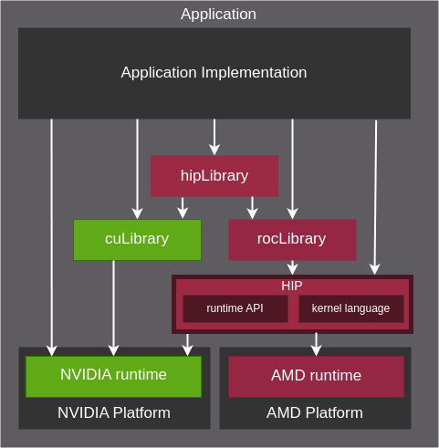

GPU to CPU
MocCUDA
High-Performance GPU-to-CPU Transpilation and Optimization via High-Level Parallel Constructs 通过高级并行结构实现高性能 GPU 到 CPU 的转译和优化
William S. Moses, Ivan R. Ivanov, Jens Domke, Toshio Endo, Johannes Doerfert, Oleksandr Zinenko
PPoPP '23: Proceedings of the 28th ACM SIGPLAN Annual Symposium on Principles and Practice of Parallel Programming PPoPP '23：第 28 届 ACM SIGPLAN 并行编程原理与实践年度研讨会论文集
While parallelism remains the main source of performance, architectural implementations and programming models change with each new hardware generation, often leading to costly application re-engineering. Most tools for performance portability require manual and costly application porting to yet another programming model.
虽然并行性仍然是性能的主要来源，但架构实现和编程模型会随着每一代新硬件的变化而变化，这通常会导致昂贵的应用程序重新设计。大多数性能可移植性工具都需要手动且昂贵的应用程序移植到另一个编程模型。
We propose an alternative approach that automatically translates programs written in one programming model (CUDA), into another (CPU threads) based on Polygeist/MLIR. Our approach includes a representation of parallel constructs that allows conventional compiler transformations to apply transparently and without modification and enables parallelism-specific optimizations. We evaluate our framework by transpiling and optimizing the CUDA Rodinia benchmark suite for a multi-core CPU and achieve a 76% geomean speedup over handwritten OpenMP code. Further, we show how CUDA kernels from PyTorch can efficiently run and scale on the CPU-only Supercomputer Fugaku without user intervention. Our PyTorch compatibility layer making use of transpiled CUDA PyTorch kernels outperforms the PyTorch CPU native backend by 2.7× .
我们提出了一种替代方法，将用一种编程模型 （CUDA） 编写的程序自动转换为基于 Polygeist/MLIR 的另一个编程模型（ CPU 线程）。我们的方法包括并行结构的表示，它允许传统的编译器转换透明且无需修改地应用，并支持特定于并行性的优化。我们通过为多核 CPU 转译和优化 CUDA Rodinia 基准测试套件来评估我们的框架，并与手写的 OpenMP 代码相比实现了 76% 的几何平均速度提升。此外，我们还展示了 PyTorch 的 CUDA 内核如何在纯 CPU 超级计算机 Fugaku 上高效运行和扩展，而无需用户干预。我们的 PyTorch 兼容层使用转译的 CUDA PyTorch 内核，其性能比 PyTorch CPU 本机后端高出 2.7 × 倍。
We propose a compiler model for most common GPU constructs: multi-level parallelism, level-wide synchronization, and level-local memory. This differs from CPU parallelism, which provides a single level of parallelism, a unified memory and peer synchronization. In contrast to source and AST-level approaches, which operate before the optimization pipeline, and existing compiler approaches, which model synchronization as a “black-box” optimization barrier, we model synchronization entirely from memory semantics. This both allows synchronization-based code to inter-operate with existing optimizations and enables novel parallel-specific optimizations. 我们为最常见的 GPU 结构提出了一个编译器模型：多级并行、级别范围同步和级别本地内存。这与 CPU 并行不同，后者提供单级并行、统一内存和对等同步。与在优化管道之前运行的源和 AST 级方法以及将同步建模为“黑盒”优化屏障的现有编译器方法相比，我们完全根据内存语义对同步进行建模。这既允许基于同步的代码与现有优化进行互操作，又可以实现新颖的并行特定优化。
Our model is implemented in the MLIR layer [20] of the LLVM compiler infrastructure [21] and it leverages MLIR’s nested-module approach for GPU codes [22] We extended the Polygeist [23] C/C++ frontend to support CUDA and to produce MLIR which preserves high-level parallelism and program structure. Our prototype compiler is capable of compiling PyTorch CUDA kernels, as well as other compute-intensive benchmarks, to any CPU architecture supported by LLVM. In addition to transformations accounting for the differences in the execution model, we also exploit parallelism on the CPU via OpenMP. Finally, our MocCUDA PyTorch integration uses our approach to compile and execute CUDA kernels in absence of a GPU while substituting unsupported calls. 我们的模型在 LLVM 编译器基础设施[ 21 ]的 MLIR 层[ 20 ]中实现，它利用 MLIR 的 GPU 代码嵌套模块方法[ 22 ]我们扩展了 Polygeist [ 23 ] C/C++ 前端以支持 CUDA 并生成MLIR 保留了高级并行性和程序结构。我们的原型编译器能够将 PyTorch CUDA 内核以及其他计算密集型基准编译到 LLVM 支持的任何 CPU 架构。除了考虑执行模型差异的转换之外，我们还通过 OpenMP 利用 CPU 上的并行性。最后，我们的 MocCUDA PyTorch 集成使用我们的方法在没有 GPU 的情况下编译和执行 CUDA 内核，同时替换不支持的调用。
Overall, our paper makes the following contributions: 总的来说，我们的论文做出了以下贡献：
- A common high-level and platform-agnostic representation of SIMT-style parallelism backed by a semantic definition of barrier synchronization that ensures correctness through memory semantics, which ensures transparent application of existing optimizations.
- SIMT 式并行性的通用高级且与平台无关的表示形式，由屏障同步的语义定义支持，通过内存语义确保正确性，从而确保现有优化的透明应用。
- Novel parallel-specific optimizations which can exploit our high-level parallel semantics to optimize programs.
- 新颖的并行特定优化可以利用我们的高级并行语义来优化程序。
- An extension to the Polygeist C/C++ frontend for MLIR which is capable of directly mapping GPU and CPU parallel constructs into our high-level parallelism primitives.
- MLIR 的 Polygeist C/C++ 前端的扩展，能够直接将 GPU 和 CPU 并行结构映射到我们的高级并行原语中。
- An end-to-end transpilation of CUDA to CPU for a subset of the Rodinia [24] benchmark suite and the internal CUDA kernels within PyTorch [2] necessary to run a Resnet-50 on the CPU-only Fugaku supercomputer.
- 将 CUDA 端到端转译为 CPU，用于 Rodinia [ 24 ]基准测试套件的子集以及 PyTorch [ 2 ]中的内部 CUDA 内核，这是在纯 CPU Fugaku 超级计算机上运行 Resnet-50 所必需的。
II-CPolygeist II-C多灵
Polygeist is a C and C++ frontend for MLIR based on Clang [23]. It is capable of translating a broad range of C++ programs into a mix of MLIR dialects that preserve elements of the high-level structure of the program. In particular, Polygeist preserves structured control flow (loops and conditionals) as MLIR SCF dialect. It also simplifies analyses by preserving multi-dimensional array constructs whenever possible by relying on the MLIR’s multi-dimensional memory reference (memref) type. Finally, Poylgeist is able to identify parts of the program suitable for polyhedral optimization [28] and represent them using the Affine dialect. Polygeist 是基于 Clang [ 23 ] 的MLIR 的 C 和 C++ 前端。它能够将各种 C++ 程序转换为 MLIR 方言的混合，从而保留程序高级结构的元素。特别是，Polygeist 将结构化控制流（循环和条件）保留为 MLIR SCF 方言。它还通过依赖 MLIR 的多维内存引用 (memref) 类型尽可能保留多维数组结构来简化分析。最后，Poylgeist 能够识别程序中适合多面体优化的部分[ 28 ]并使用仿射方言表示它们。
Representation of GPU Kernel Launch
We define the representation of a GPU kernel launch as follows (illustrated in Fig. 3):
- A 3D parallel for-loop over all blocks in the grid.
- A stack allocation for any shared memory, scoped to be unique per block.
- A 3D parallel for-loop over all threads in a block.
- A custom Polygeist barrier operation that provides equivalent semantics to a CUDA/ROCm synchronization.
我们定义GPU内核启动的表示如下(如图3所示):
- 在网格中所有块上的3D并行for循环。
- 对任何共享内存的堆栈分配,每个块的范围是唯一的。
- 在一个块中所有线程上的3D并行for循环。
- 提供与 CUDA / ROCm同步等效语义的自定义 Polygeist 屏障操作。
From CUDA to OpenCL: Towards a performance-portable solution for multi-platform GPU programmin
https://www.sciencedirect.com/science/article/abs/pii/S0167819111001335
In this work, we evaluate OpenCL as a programming tool for developing performance-portable applications for GPGPU. While the Khronos group developed OpenCL with programming portability in mind, performance is not necessarily portable. OpenCL has required performance-impacting initializations that do not exist in other languages such as CUDA. Understanding these implications allows us to provide a single library with decent performance on a variety of platforms. We choose triangular solver (TRSM) and matrix multiplication (GEMM) as representative level 3 BLAS routines to implement in OpenCL. We profile TRSM to get the time distribution of the OpenCL runtime system. We then provide tuned GEMM kernels for both the NVIDIA Tesla C2050 and ATI Radeon 5870, the latest GPUs offered by both companies. We explore the benefits of using the texture cache, the performance ramifications of copying data into images, discrepancies in the OpenCL and CUDA compilers’ optimizations, and other issues that affect the performance. Experimental results show that nearly 50% of peak performance can be obtained in GEMM on both GPUs in OpenCL. We also show that the performance of these kernels is not highly portable. Finally, we propose the use of auto-tuning to better explore these kernels’ parameter space using search harness.
在这项工作中，我们将 OpenCL 评估为用于为 GPGPU 开发性能可移植应用程序的编程工具。虽然 Khronos 小组在开发 OpenCL 时考虑到了编程的可移植性，但性能不一定是可移植的。OpenCL 需要影响性能的初始化，而其他语言（如 CUDA）中不存在这些初始化。了解这些含义使我们能够在各种平台上提供具有良好性能的单个库。我们选择三角求解器 （TRSM） 和矩阵乘法 （GEMM） 作为在 OpenCL 中实现的代表性 3 级 BLAS 例程。我们分析 TRSM 以获得 OpenCL 运行时系统的时间分布。然后，我们为 NVIDIA Tesla C2050 和 ATI Radeon 5870（两家公司提供的最新 GPU）提供经过调整的 GEMM 内核。我们探讨了使用纹理缓存的好处、将数据复制到图像中的性能影响、OpenCL 和 CUDA 编译器优化中的差异以及影响性能的其他问题。实验结果表明，在 OpenCL 的两个 GPU 上，GEMM 都可以获得近 50% 的峰值性能。我们还表明，这些内核的性能并不是高度可移植的。最后，我们建议使用自动调整，以使用搜索工具更好地探索这些内核的参数空间。
Kokkos: Enabling manycore performance portability through polymorphic memory access patterns
Kokkos：通过多态内存访问模式实现众核性能可移植性
Achieving Portability and Performance through OpenACC
通过 OpenACC 实现可移植性和性能
https://ieeexplore.ieee.org/document/7081674
OpenACC is a directive-based programming model designed to allow easy access to emerging advanced architecture systems for existing production codes based on Fortran, C and C++. It also provides an approach to coding contemporary technologies without the need to learn complex vendor-specific languages, or understand the hardware at the deepest level. Portability and performance are the key features of this programming model, which are essential to productivity in real scientific applications. OpenACC support is provided by a number of vendors and is defined by an open standard. However the standard is relatively new, and the implementations are relatively immature. This paper experimentally evaluates the currently available compilers by assessing two approaches to the OpenACC programming model: the "parallel" and "kernels" constructs. The implementation of both of these construct is compared, for each vendor, showing performance differences of up to 84%. Additionally, we observe performance differences of up to 13% between the best vendor implementations. OpenACC features which appear to cause performance issues in certain compilers are identified and linked to differing default vector length clauses between vendors. These studies are carried out over a range of hardware including GPU, APU, Xeon and Xeon Phi based architectures. Finally, OpenACC performance, and productivity, are compared against the alternative native programming approaches on each targeted platform, including CUDA, OpenCL, OpenMP 4.0 and Intel Offload, in addition to MPI and OpenMP.
OpenACC 是一种基于指令的编程模型，旨在允许轻松访问基于 Fortran、C 和 C++ 的现有产品代码的新兴高级架构系统。它还提供了一种对现代技术进行编码的方法，而无需学习复杂的供应商特定语言，也无需更深入地了解硬件。可移植性和性能是该编程模型的关键特性，这对于实际科学应用中的生产力至关重要。OpenACC 支持由许多供应商提供，并由开放标准定义。但是，该标准相对较新，实现也相对不成熟。本文通过评估 OpenACC 编程模型的两种方法（“并行”和“内核”结构）来实验评估当前可用的编译器。对每个供应商的这两种结构的实施进行了比较，显示性能差异高达 84%。此外，我们观察到最佳供应商实施之间的性能差异高达 13%。识别出在某些编译器中似乎会导致性能问题的 OpenACC 功能，并将其链接到供应商之间不同的默认向量长度子句。这些研究是在一系列硬件上进行的，包括基于 GPU、APU、Xeon 和 Xeon Phi 的架构。最后，将 OpenACC 的性能和生产力与每个目标平台上的替代原生编程方法进行了比较，包括 CUDA、OpenCL、OpenMP 4.0 和 Intel Offload，以及 MPI 和 OpenMP。
GPU(CUDA) to CPU
GPUOcelot
GPUOcelot: A dynamic compilation framework for PTX
GPUOcelot：PTX 的动态编译框架
Ocelot is a just-in-time compiler, which retargets PTX assembler (used internally by CUDA) for non-NVIDIA hardware.
Ocelot是一个即时编译器，它针对非 NVIDIA 硬件重新定位 PTX 汇编器（由 CUDA 内部使用）。
HIPIFY
HIPIFY: Convert CUDA to Portable C++ Code
hipify-clang and hipify-perl are tools that automatically translate NVIDIA CUDA source code into portable HIP C++.
hipify-clang和hipify-perl是自动将 NVIDIA CUDA 源代码转换为可移植 HIP C++ 的工具。
HIP
HIP: C++ Heterogeneous-Compute Interface for Portability
HIP is a C++ Runtime API and Kernel Language that allows developers to create portable applications for AMD and NVIDIA GPUs from single source code.
HIP 是一种 C++ 运行时 API 和内核语言，允许开发人员从单一源代码创建适用于 AMD 和 NVIDIA GPU 的可移植应用程序。
Key features include: 主要特点包括：
HIP is very thin and has little or no performance impact over coding directly in CUDA mode.
HIP 非常薄，与直接在 CUDA 模式下编码相比，几乎没有性能影响。
HIP allows coding in a single-source C++ programming language including features such as templates, C++11 lambdas, classes, namespaces, and more.
HIP 允许使用单源 C++ 编程语言进行编码，包括模板、C++11 lambda、类、命名空间等功能。
HIP allows developers to use the "best" development environment and tools on each target platform.
HIP允许开发人员在每个目标平台上使用“最好的”开发环境和工具。
The HIPIFY tools automatically convert source from CUDA to HIP.
HIPIFY工具自动将源从 CUDA 转换为 HIP。
Developers can specialize for the platform (CUDA or AMD) to tune for performance or handle tricky cases.
开发人员可以专门针对平台（CUDA 或 AMD）来调整性能或处理棘手的情况。

Domain-Specific Multi-Level IR Rewriting for GPU: The Open Earth Compiler for GPU-accelerated Climate Simulation
领域特定多级 IR 重写用于 GPU：GPU 加速气候模拟的开放地球编译器
https://dl.acm.org/doi/10.1145/3469030
2021.9.03
Most compilers have a single core intermediate representation (IR) (e.g., LLVM) sometimes complemented with vaguely defined IR-like data structures. This IR is commonly low-level and close to machine instructions. As a result, optimizations relying on domain-specific information are either not possible or require complex analysis to recover the missing information. In contrast, multi-level rewriting instantiates a hierarchy of dialects (IRs), lowers programs level-by-level, and performs code transformations at the most suitable level. We demonstrate the effectiveness of this approach for the weather and climate domain. In particular, we develop a prototype compiler and design stencil- and GPU-specific dialects based on a set of newly introduced design principles. We find that two domain-specific optimizations (500 lines of code) realized on top of LLVM’s extensible MLIR compiler infrastructure suffice to outperform state-of-the-art solutions. In essence, multi-level rewriting promises to herald the age of specialized compilers composed from domain- and target-specific dialects implemented on top of a shared infrastructure.
大多数编译器都有一个单一核心的中间表示（IR）（例如，LLVM），有时辅以模糊定义的类似 IR 的数据结构。这个 IR 通常是低级且接近机器指令的。因此，依赖于特定领域信息的优化要么不可能实现，要么需要复杂的分析来恢复缺失的信息。相比之下，多级重写实例化了一组方言（IR）的层次结构，逐级降低程序级别，并在最合适的级别执行代码转换。我们展示了这种方法在天气和气候领域中的有效性。特别是，我们开发了一个原型编译器，并基于一组新引入的设计原则设计了模板和 GPU 特定的方言。我们发现，在 LLVM 的可扩展 MLIR 编译器基础设施之上实现的两个特定领域优化（500 行代码）足以超越最先进的解决方案。本质上，多级重写有望预示着由领域和目标特定方言组成的专用编译器的时代，这些方言是在共享基础设施之上实现的。